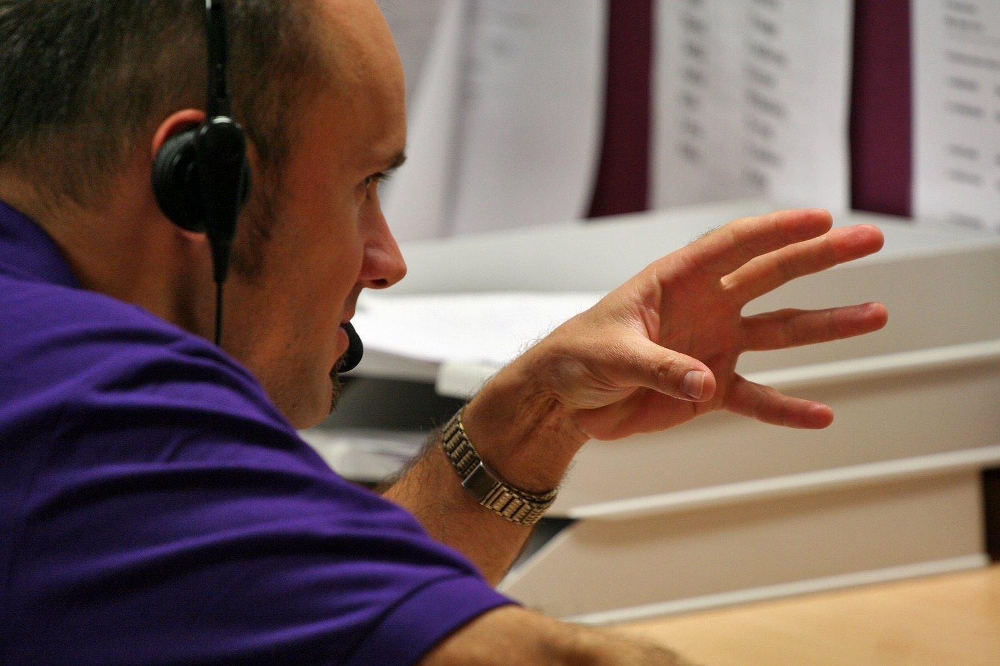

We are here to help you with all your Networking and IT needs. Whether you are looking for a consultation, technical support, or a tailored service package, our team is ready to assist with professionalism and care.
You can reach us directly through multiple channels. Visit us in Durban, South Africa, email us at info@snytechsolutions.com, or call us at 0745373130. Our responsive team ensures that your queries are handled promptly and effectively.

For convenience, we also provide an online contact form where you can share your name, email, and message. We’ll respond quickly to ensure your IT challenges are addressed. Contact us today and take the first step toward smarter IT solutions.
To further enhance communication, the Contact page will also include links to social media platforms and a map integration for easy navigation. This ensures clients can connect through multiple channels, reflecting modern business practices.